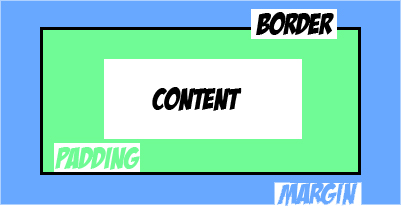

Margin, Border, and Padding....oh My!
If you just starting out in html/CSS then you probably ran into the issues of margin, border, padding. As a beginner figuring out the difference may be frustrating at time but fear not! I'm here to show you the way!
So what is the difference between Margin, Border, and Padding?
- Padding property defines the space inside the element content.
- The margin property defines the space around the element outside the border. It is always transparent.
- Border property is used to style the size, color of an element. It is also the separation between Padding and margin. Padding tacks the background color of the element.
For a more visual representation refer to the image below.
In this image, the blue space is the margin, the light green spacing is the padding and the black space is the border. In the next example I try to show what would happen if you expand the padding. Usually when you have element(your content) there would be no padding, borders or margin respresent yet. The only think should would be the content(represented by the white space in the image). If you were add some adding padding to your content, spaces would be created around your content but inside of the border. Refer to the image below if your still having trouble.
As you can see, increasing the right padding of the your content will increase the spacing right of the content. Increasing both top and bottom of the content will expand the space as well. Inc CSS you can expand the left, right, top, down independently or all at once.
In the next example, I'll show you what happens when you increase the margin of your content.
In this image, you can see that the spaces outside of the content and the border is increase if you apply margin into your content. Like padding, you can expand the left, right, top, down independently or all at once.
Alright! I pretty sure you got the hang of it now. In the next example I show you how to use padding and margin when you have two content right next to each other.
In, Example #1, you see two elements with no padding or margin but does have a border.
In example #2, you see that I added padding and margin to both elements. There is now padding around content inside the border.
In example #3, if you were to increase the rigt padding(or "padding-right" in CSS) the space between the content and the border increase but the space between the elements stay the same.
But what would happen if you increase the right margin(margin-right)? In example #4, I did just that. The image shows the element push the other element further apart from the place we I created.
Well hopefully this makes sense. But the best way to learn is do it yourself and see the different that padding, margin, border behaves in your code.
If you see anything in my post that can be improve upon because contact me. I would love to hear what you have to say. Thanks!